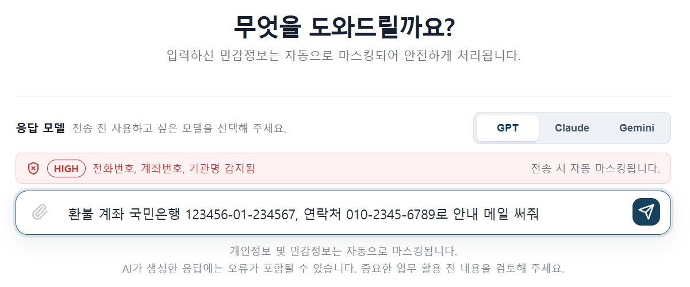
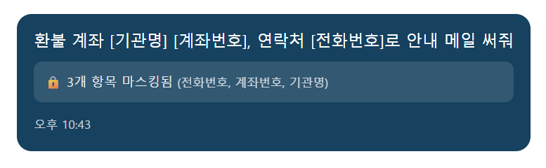
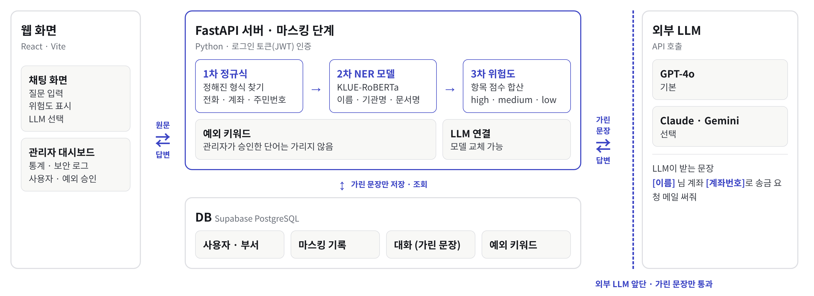
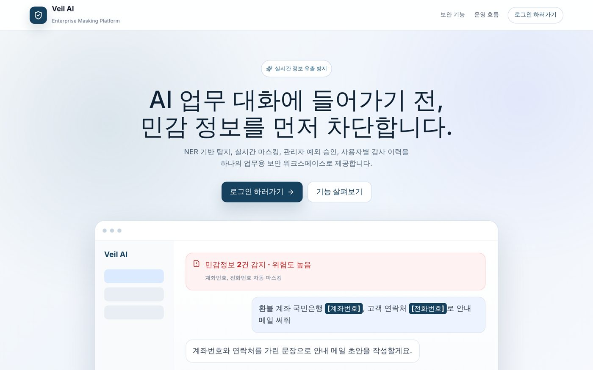
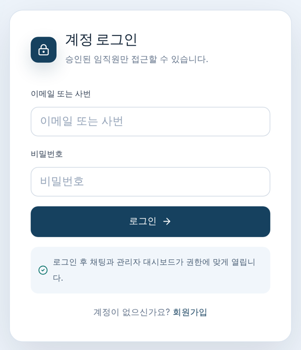
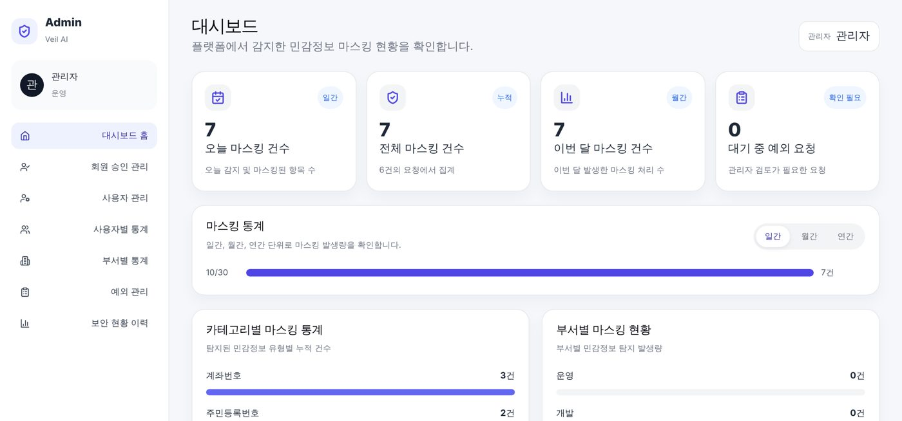

01
개요


문제
- 생성형 AI를 업무에 쓰면서 고객 정보 · 계좌번호 · 사내 문서명을 프롬프트에 그대로 붙여 넣는 일이 생김
- 입력한 문장은 외부 LLM 서버로 그대로 전송되고, 회사는 무엇이 나갔는지 알 수 없음
해결
- LLM 사용을 막는 대신 보내기 직전에 민감정보를 가리는 계층을 만듦
- 형식이 정해진 정보는 규칙으로, 이름 · 문서명처럼 문맥이 필요한 정보는 직접 학습한 NER 모델로 탐지
내 역할
진행 총괄주제 선정, 일정 · 역할 관리, 중간 발표
데이터 · 모델NER 학습 데이터셋 49,576문장 구축, 모델 4종 파인튜닝 · 비교
화면랜딩 · 로그인 페이지 구현
02
형식은 규칙으로, 문맥은 모델로

메시지 한 건이 처리되는 과정
입력 · 미리보기직원이 문장을 입력하면 가려질 항목과 위험도를 먼저 보여 줌
1차 정규식전화 · 계좌 · 주민번호처럼 형식이 정해진 정보
2차 NER 모델이름 · 기관명 · 문서명 · 프로젝트명처럼 문맥이 필요한 정보
3차 위험도 판정탐지 결과를 점수로 합산해 high · medium · low
LLM 전송 · 저장가려진 문장만 LLM으로, DB에도 가려진 문장과 탐지 기록만
입력
환불 계좌 국민은행 123456-01-234567, 연락처 010-2345-6789로 안내 메일 써줘
출력
환불 계좌 [기관명] [계좌번호], 연락처 [전화번호]로 안내 메일 써줘
판정
계좌번호 10 + 전화번호 5 + 기관명 1 + 여러 유형 5 = 21점 → high
설계 포인트
- 두 가지 탐지를 섞은 이유: 번호류는 규칙이 빠르고 정확하고, 이름 · 문서명은 문맥을 봐야 함. 정규식이 가린 문장을 모델에 넘겨 같은 정보를 두 번 잡지 않음
- 단계별 독립 구조: 정규식 · NER · 위험도가 각자 독립돼 있어 NER 모델을 불러오지 못해도 정규식 결과로 서비스가 계속 동작
- LLM 교체 가능: GPT-4o · Claude · Gemini를 같은 방식으로 연결해 골라 쓸 수 있음
- 가린 문장만 전달 · 저장: 외부 LLM으로 나가는 문장과 DB에 남는 문장 모두 마스킹을 거친 것
시스템 이해 · 학습한 모델이 서비스 안에서 쓰이는 방식
서비스 안에서 모델이 가리는 방식
모델은 단어 조각마다 B(시작) · I(이어짐) · O(해당 없음) 태그를 붙이고, 같은 종류의 B → I를 하나로 묶어 가립니다.
김민지B-PERSON
팀장에게O
알파B-PROJECT
프로젝트I-PROJECT
보고서O
전달해줘O
[이름] 팀장에게 [프로젝트명] 보고서 전달해줘
모델 불러오기
서버 시작 시 미리 로드첫 요청이 기다리지 않게
모델 검증가중치 누락이나 레이블 불일치면 로드 거부
한 번만 로드해 공유동시 요청에도 모델은 하나만
내 역할
03
NER 학습 데이터셋 설계 · 구축
문제
- 공개 NER 데이터에는 인명 · 기관 · 주소는 있지만 사내 문서명 · 프로젝트명 · 비밀번호처럼 기업에서 새는 정보는 라벨 자체가 없음
해결 방법
- 있는 라벨은 공개 데이터로: KLUE-NER의 자연스러운 실제 문장 사용
- 없는 라벨은 합성: 문서명 · 프로젝트명 · 비밀번호는 규칙 기반으로 업무 문장을 합성
- 과잉 탐지 방지: 민감정보가 없는 문장과, 형태는 비슷하지만 민감정보가 아닌 문장(hard negative)을 함께 넣음
데이터 구성
| 유형 | 문장 수 | 넣은 이유 |
|---|---|---|
| 단일 엔티티 + NONE | 39,624 | 라벨별 기본 학습, 과잉 탐지 확인 |
| 멀티 엔티티 | 4,952 | 한 문장에 민감정보가 여러 개 |
| 다중 문장 | 5,000 | 두 문장 이상 이어지는 실제 업무 입력 |
| 합계 | 49,576 |
라벨별 출처(공개 · 합성)를 기록해 두고, 라벨마다 성능이 다를 때 해석하는 근거로 사용
04
모델 4종 비교와 선택
테스트셋 성능 비교
| 모델 | 정밀도 | 재현율 | F1 |
|---|---|---|---|
| KLUE-RoBERTa | 95.59 | 96.70 | 96.14 |
| KoELECTRA-base | 95.21 | 96.08 | 95.64 |
| KoELECTRA-NER | 94.58 | 95.70 | 95.14 |
| KcBERT | 87.27 | 91.04 | 89.12 |
단위 %. 평가 기준: 같은 출처 · 생성 규칙으로 만든 학습 미사용 문장 4,996개. 8 에폭 모델 기준, KLUE-RoBERTa가 세 지표 모두 1위
비교 방법
- 같은 조건: 같은 데이터 · 같은 분할로 한국어 사전학습 모델 4종을 각각 파인튜닝
- 공정한 평가: 검증 점수가 가장 높은 8 에폭(반복 횟수) 모델을, 같은 출처 · 생성 규칙으로 만든 학습 미사용 문장 4,996개로 비교
- 결정: F1이 가장 높은 KLUE-RoBERTa(96.14%)를 서비스에 적용
05
직접 써 보며 고친 문제와 랜딩 · 로그인
| 발견한 문제 | 수정 내용 |
|---|---|
| 전화번호 · 계좌번호 오탐 | ‘연락처 · 계좌’ 같은 앞뒤 단어와 숫자 경계 조건을 추가하고, 날짜 · 버전 번호는 제외 |
| 직책이 이름으로 가려짐 | ‘팀장’ 같은 직책 단어는 이름 결과에서 제외 |
| 원문이 브라우저에 남음 | 대화 저장을 서버 DB로 옮기고, 가려진 문장만 저장하도록 변경 |
| 로그인하면 무조건 대시보드 | 직원은 채팅, 관리자는 대시보드로 역할에 따라 이동 |
실제 업무 문장으로 재현 → 수정 → 같은 문장으로 재확인. 정규식 회귀 테스트 32건 모두 통과


06
결과
결과
- 규칙과 모델을 섞은 3단계 파이프라인으로 모든 요청 0.1초 이내 실시간 마스킹 (배포 서버 실측 24건)
- 직접 구축한 데이터셋으로 학습한 모델이 테스트셋 F1 96.14%
- Vercel · Hugging Face Spaces · Supabase로 실제 접속 가능한 서비스 배포
